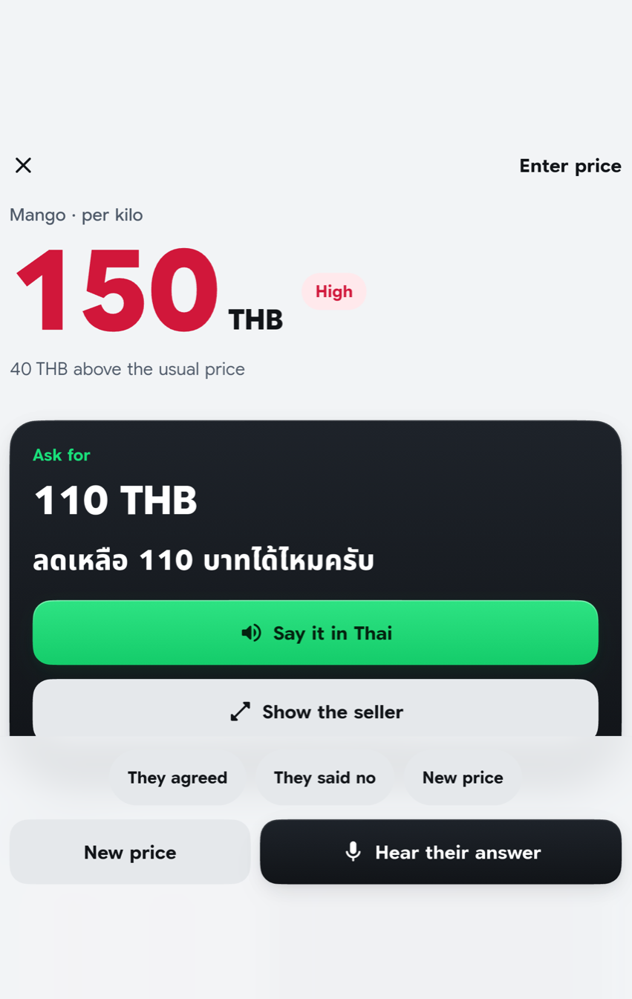

The AI hears the seller
Heard in Thai. Judged. Answered in Thai.
Usual mango price 80–110 THB per kilo, October (checkraka.app, lotuss.com).
Items not on the list: web search, kept only if the quoted sentence is on the page.
Thai speech recognition in our test: 15 of 15 quiet, 14 of 15 noisy.
